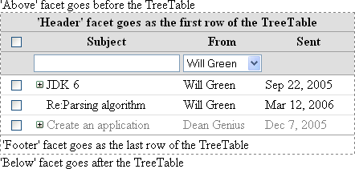
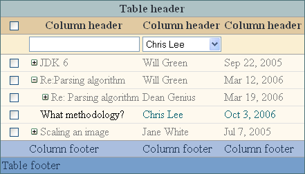
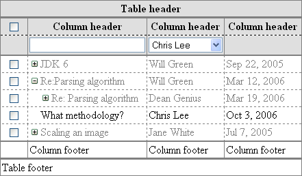

Version 3.0.0
TreeTable |
|||||||||||||||||||||||||||||||||||||||||||||||||||||||||||||||||||||||||||||||||||||||||||||||||||||||||||||||||||||||||||||||||||||||||||||||||||||||||||||||||||||||||||||||||||||||||||||||||||
|
Developer’s Guide Home
Installation and Configuration Common Concepts Components Index Border Layout Panel Calendar Chart Command Button Command Link Composite Filter Confirmation Data Table Date Chooser Day Table Drop Down Field Dynamic Image Folding Panel For Each Graphic Text Hint Label Input Text Input Textarea Layered Pane Level Indicator Popup Layer Popup Menu Select Boolean Checkbox Select Many Checkbox Select One Radio Spinner Suggestion Field Tabbed Pane Tab Set Tree Table Two List Selection Window Focus Load Bundle Scroll Position Ajax Framework Validation Framework Tag Reference API Reference |
Key FeaturesInteractive Data NavigationTreeTable lets the user interactively query the data in virtually any way to meet a wide variety of usage scenarios.
Representing Complex Data StructuresThese features allow to represent and provide convenient user interface for displaying complex entity types organized as tree structures, for example in cases where fields are grouped into complex sub-types, or the number of fields (aka columns) is dynamic.
Efficient Data HandlingThe following features allow optimizing the network traffic and memory, and allow convenient data source declaration depding on the nature of data.
Flexible Data VisualizationThere is a number of ways for customizing how a "raw" data is displayed to address various design requirements.
Specifying the ContentTo add the TreeTable component to a page, use the <o:treeTable> tag. To specify the content of the TreeTable, you should configure the tree structure and columns. The tree structure is specified as a hierarchy of objects storing node data. The TreeTable component displays a row for each tree node. Specifying the columns defines how the cell contents are derived from the node data that corresponds to the row which holds this cell. The tree structure in the TreeTable component can be specified either right in the page or in a backing bean. See the sections Static Tree Structure and Dynamic Tree Structure below for more details.
Note that the same child components of a column are rendered in every cell of that column. So in order for these components to display different data for each respective row, you should use a request-scope variable referring to the current row's data (see the next section). Request-Scope VariablesWhen specifying child components to be displayed in TreeTable columns, you can use request-scope variables that reference the current row's node parameters. There are four such variables. To use any of them, you should declare its name in the corresponding attribute of the <o:treeTable> tag:
In addition there are two more variables provided to define a cell style condition. These variables are available when specifying the condition for the <o:cell> and <o:cellStyle> tags:
After their declaration, the variables will be available under the declared names when specifying attribute values in JSP source with EL code. If the value is evaluated by a backing bean method, you can use the org.openfaces.util.Faces.var(String varName) method to retrieve a variable by its name. <o:treeTable var="nodeObject" nodeLevelVar="nodeLevel"> ... </o:treeTable> Model Node Objects RequirementsThere are two ways of defining the tree structure of the TreeTable component. Either way, the node data objects provided by the tree structure must meet the following requirements:
If node data objects do not meet these requirements, then each node should provide a "node key" object that must uniquely identify the appropriate node and satisfy the above mentioned requirements. The way node keys are specified depends on the type of the tree structure used. For more information about the tree structure, see the sections Static Tree Structure and Dynamic Tree Structure below. Static Tree StructureIn a static tree structure, the hierarchy of nodes is defined right in the page within the <o:treeTable> tag. To specify the static structure, you should place the <o:staticTreeStructure> tag into the <o:treeTable> tag. This tag should contain a hierarchy of the <o:treeNode> tags for each node. The <o:treeNode> tag has two attributes: value (required) and nodeKey (optional). The value attribute specifies the node data object and can be either a value-binding expression that references any object or just a String (as in the example below). If present, the nodeKey attribute specifies the node key object for this node, as described in the section above. The following example shows the TreeTable component with an explicitly defined hierarchy of nodes. <o:treeTable var="color"> <o:staticTreeStructure> <o:treeNode value="Colors"> <o:treeNode value="Warm colors"> <o:treeNode value="Red"/> <o:treeNode value="Yellow"/> </o:treeNode> <o:treeNode value="Cold colors"> <o:treeNode value="Blue"/> <o:treeNode value="Purple"/> </o:treeNode> </o:treeNode> </o:staticTreeStructure> <o:treeColumn> <h:outputText value="#{color}"> </h:outputText> </o:treeColumn> </o:treeTable> Dynamic Tree StructureIn case of a dynamic tree structure, the nodes are not specified explicitly; instead, you specify the rules of how to retrieve the nodes. This gives you the ability to provide flexible hierarchies of objects from any data source. To specify a dynamic tree structure, use the <o:dynamicTreeStructure> tag. The hierarchy in the dynamic tree structure is defined by specifying an expression for retrieving child nodes of a given node. This expression is specified using the nodeChildren attribute. Whenever the TreeTable component needs to retrieve a list of children for a specific node, it makes this node current and evaluates the expression specified by the nodeChildren attribute. The parameters of the current node are available in the expression through request-scope variables. Building of the tree structure starts from retrieving the list of top-level nodes. As with any other nodes, the top-level nodes are calculated with the nodeChildren attribute, but in their case there is no parent node. After retrieving the top-level nodes, the TreeTable component retrieves child nodes for each of them recursively using the same attribute. The <o:dynamicTreeStructure> tag provides the following attributes:
This example shows the TreeTable component that references the Messages backing bean. <o:treeTable var="message"> <o:dynamicTreeStructure nodeChildren="#{Messages.nodeChildren}" nodeHasChildren="#{Messages.nodeHasChildren}" nodeKey="#{message.id}"/> <o:treeColumn> <f:facet name="header"> <h:outputText value="Subject"/> </f:facet> <h:outputText value="#{message.subject}"/> </o:treeColumn> <o:column> <f:facet name="header"> <h:outputText value="Author"/> </f:facet> <h:outputText value="#{message.author}"/> </o:column> </o:treeTable> In the following example, you can see a method from the backing bean of the previous example: public List getNodeChildren() { ForumMessage message = Faces.var("message", ForumMessage.class); if (message == null) return myRootMessages; else return message.getReplies(); } public boolean isNodeHasChildren() { ForumMessage message = Faces.var("message", ForumMessage.class); return message.hasReplies(); } Specifying ColumnsSpecifying columns defines the contents of all the cells of the TreeTable component. Each table column defines the content of its header, footer, and body cells. The content for the body cells is specified using row request-scope variables (for more details about them, see the section Request-Scope Variables). The TreeTable component supports three types of columns:
The list of columns is specified using the <o:column> tag for each column. The use of the <o:column> tag is the same as for the DataTable component. The content of the <o:column> tag is used for rendering the cells belonging to that column. The column also has the "header", "subHeader" and "footer" facets that can be used to specify its header, sub-header (usually displays filtering component) and footer respectively. When specifying child components to be displayed in the column, in addition to the variable specified in the var attribute, you can use variables whose names are specified in the nodeLevelVar, nodePathVar or nodeHasChildren attributes of the TreeTable component (see the section Request-Scope Variables for more details). Note that these variables are not mandatory and you can use them as needed. To specify a column for displaying the tree structure, use the <o:treeColumn> tag. The use of the <o:treeColumn> tag is similar to the <o:column> tag with the exception of some features described below. The following example shows a two-column TreeTable component with headers for each column. <o:treeTable var="message"> <o:dynamicTreeStructure nodeChildren="#{Messages.nodeChildren}" /> <o:treeColumn> <f:facet name="header"> <h:outputText value="Subject"/> </f:facet> <h:outputText value="#{message.subject}"/> </o:treeColumn> <o:column> <f:facet name="header"> <h:outputText value="From"/> </f:facet> <h:outputText value="#{message.author.userName}"/> </o:column> </o:treeTable> The <o:treeColumn> tag provides several additional attributes for customizing its appearance and nodes. The levelIndent attribute lets you specify the horizontal offset between the node levels. It can be specified in pixels (px), millimeters (mm), em dashes (em), etc. For example, "30px". The showAsTree boolean attribute ("true" by default) allows you to dynamically change the column appearance. So when the attribute is set to "false", the column looks like an ordinary column specified with the <o:column> tag. The expansionToggleCellStyle and expansionToggleCellClass attributes are used to define a style for a cell that contains expansion toggle (+ and -) buttons. And you can customize expansion toggle images (+/-), using the expandedToggleImageUrl and collapsedToggleImageUrl attributes.
<o:treeTable var="message"> <o:treeColumn levelIndent="30px" expansionToggleCellStyle="vertical-align: top; padding-top: 4px"> <f:facet name="header"> <h:outputText value="Subject"/> </f:facet> <h:outputText value="#{message.subject}"/> </o:treeColumn> </o:treeTable> Please also read the Specifying Header and Footer section in DataTable documentation for the description of two ways of specifying column's header and footer and a way of specifying column name for bound components such as a composite filter or a column visibility menu. Specifying Dynamic ColumnsIn addition to column types listed in section Specifying Columns the TreeTable provides an ability to specify dynamic number of columns. To add dynamic columns to the TreeTable, use the <o:columns> child tag of the <o:treeTable> tag. The list of the dynamic columns is specified using the value attribute. This attribute should be specified as a value-binding expression that refers to an array or a collection of objects that serve as column data objects. The <o:columns> tag results in adding one column per each object found in this collection. The column data objects must be serializable and correctly implement equals and hashCode methods. You should make sure to provide objects that identify their respective columns in any way that should be sufficient for distinguishing between columns when they are rendered or their properties are calculated. See below for the places where column data objects are used. Please note the var request-scope variable of the TreeTable is not available when you specify the value attribute of the Columns. Most of the attributes of <o:columns> tag are analogous to their counterparts in the <o:column> tag but they have one valuable difference - an ability for the attributes to be specified as value binding expressions that allow specifying column attributes on a per-column basis. You need to use the column data request-scope variable in value binding expressions in order to specify column-specific attribute values. The name of this request-scope variable should be specified in the var attribute of the <o:columns> tag. When specifying child components of the <o:columns> tag, the request-scope variable declared in the var attribute of the <o:treeTable> tag can be used. In addition you can refer to the current column when specifying child components of the <o:columns> tag using the column data request scope variable. The <o:columns> tag does not have the id or rendered attributes. However, you can specify the identifier and a flag that indicates whether or not column is visible for each dynamic column using the columnId and columnRendered attributes of the <o:columns> tag respectively. These attributes should be specified as value-binding expressions that refer to identifier or a flag indicating whether column is visible for each dynamic column. You can use a column data variable specified in the var attribute in the expression for these attributes. Please note that column identifiers evaluated for columns inside the <o:columns> tag are used in the same way as id attributes of ordinary <o:column> tags, so the identifiers evaluated using this expression should be unique in bounds of the containing TreeTable. The following example demonstrates the usage of the <o:columns> tag: <o:treeTable var="node"> <o:dynamicTreeStructure nodeChildren="#{TreeTableBean.nodeChildren}"/> <o:treeColumn> <f:facet name="header"> <h:outputText value="name"/> </f:facet> <h:outputText value="#{node.name}"/> </o:treeColumn> <o:columns value="#{TreeTableBean.dynamicColumns}" var="col"> <f:facet name="header"> <h:outputText value="#{col}"/> </f:facet> <h:inputText value="#{node.dynamicColumns[col]}"/> </o:columns> </o:treeTable> As an ordinary <o:column> tag, the <o:columns> tag supports sorting, filtering, style customization and columns-specific events. Grouping ColumnsIt is possible to combine columns into groups to reflect their logical connections. This can be done by enclosing several column tags into the <o:columnGroup> tag. This tag has the set of features similar to that of ordinary columns:
Here's a simple example of using column groups: <o:treeTable value="#{TreeTableBean.folders}" var="folder"> <o:treeColumn> <f:facet name="header"> <h:outputText value="Name"/> </f:facet> <h:outputText value="#{folder.name}"/> </o:treeColumn> <o:column> <f:facet name="header"> <h:outputText value="Date created"/> </f:facet> <h:outputText value="#{folder.creationDate}"/> </o:column> <o:columnGroup> <f:facet name="header"> <h:outputText value="Attributes"/> </f:facet> <o:column> <f:facet name="header"> <h:outputText value="Read-only"/> </f:facet> <h:outputText value="#{product.attributes.readOnly}"/> </o:column> <o:column> <f:facet name="header"> <h:outputText value="Hidden"/> </f:facet> <h:outputText value="#{product.attributes.hidden}"/> </o:column> </o:columnGroup> </o:treeTable> Note that there are both the columns those are enclosed into <o:columnGroup> tag and the columns those are not part of any group. It is also possible to create nested column groups, thus establishing an arbitrary hierarchy of columns. It is possible to emphasize separation of columns into groups with a feature of customizing gridlines for different levels of columns (or groups). See the Column Group Separators section for details. Changing Column OrderThe columnsOrder attribute of the <o:treeTable> tag lets you explicitly specify the order in which the columns will be displayed. This attribute should be declared as a value-binding expression and the bound value should be a list containing column IDs for each column in the order you want them to appear. If the columnsOrder attribute is not specified, all columns are rendered in the order they are defined. Otherwise, only the columns whose IDs are included into this list are rendered. In the example below, the columns in the TreeTable component are ordered explicitly. <o:treeTable var="message" columnsOrder="#{Messages.columnsOrder}"> <o:dynamicTreeStructure nodeChildren="#{Messages.nodeChildren}" /> <o:treeColumn id = "subjectColumn"> ... </o:treeColumn> <o:column id = "authorColumn"> ... </o:column> <o:column id = "sentColumn"> ... </o:column> <o:column id = "sizeColumn"> ... </o:column> </o:treeTable> Drag & Drop Column ReorderingIt is possible to let the user reorder columns interactively with drag & drop by adding the <o:columnReordering> tag into the <o:treeTable> tag. When this feature is turned on, the user can drag the column by its header and drop it into the appropriate place in-between columns. The current drop target is highlighted for user's convenience. In case of ??TreeTable??s with horizontal scrolling enabled (see the Content Scrolling section), the autoscroll areas will pop up on the header's left and/or right sides allowing the user to scroll the table while dragging the column. The order of columns is read from and saved to the columnsOrder attribute of <o:treeTable> tag, so you can bind this attribute to your backing bean if you'd like to receive the column order changes. See the Changing Column Order section for the description of columnsOrder attribute. Mere adding of the <o:columnReordering> tag will turn on the reordering behavior though you can also configure the attributes of this tag to adjust styles and appearance of various parts of UI that participate in the reordering process. Dragging the column header creates a visual copy of the header cell that the user is dragging, and it's possible to apply an additional style to the dragged cell using the draggedCellStyle and draggedCellClass attributes. By default, the dragged cell is displayed as semitransparent and the transparency level can be configured using the draggedCellTransparency attribute, where 0.0 corresponds to the fully-opaque display, and 1.0 corresponds to the fully-transparent display. The appearance of drop target can be customized with the following attributes
Finally, the appearance of the auto-scroll areas that appear on the horizontally-scrollable tables can be configured with the following attributes:
Here's an example of turning on the column reordering feature for TreeTable with customizing the drop target color and binding the column order to a backing bean: <o:treeTable ...
columnsOrder="#{Messages.columnsOrder}">
<o:columnReordering dropTargetStyle="background: red"/>
...
</o:treeTable>
Column ResizingIt is possible to let the user resize columns by adding the <o:columnResizing> tag as a child of <o:treeTable> tag. When column resizing is turned on, the user can drag the column header separators to resize columns. The total TreeTable width is not affected by the process of resizing columns. It should also be noted that if a TreeTable doesn't have a fixed width specification, for example when it is declared to have 100% width, then table layout behavior is slightly changed when column resizing is turned on. The TreeTable is loaded with its width properly calculated using the specified relative width, though after the page is loaded the TreeTable's width is fixed and is not recalculated. The <o:columnResizing> tag can be added without specifying any attributes, though there are some optional configuration attributes. The resizeHandleWidth attribute specifies the size of the "dragging area" near the column header separator. This area can be wider than the separator itself to make it easier for the user to locate the draggable area. The minColWidth attribute can be used to specify the minimum width that a column can take after resizing. Both of these attributes can be specified in any CSS units except percent. Here's an example of adding the column resizing capability to a TreeTable: <o:treeTable var="message" columnsOrder="#{Messages.columnsOrder}" width="100%"> <o:columnResizing resizeHandleWidth="10px" minColWidth="50px"/> <o:dynamicTreeStructure nodeChildren="#{Messages.nodeChildren}" /> <o:treeColumn id = "subjectColumn"> ... </o:treeColumn> <o:column id = "authorColumn"> ... </o:column> ... </o:treeTable> Note There are also two per-column attributes that are applicable only when TreeTable has the column resizing feature. It is possible to make certain column non-resizeable by assigning "false" to the column's resizeable attribute. There is also the possibility to specify the minimum resizing width on a per-column basis. Specifying the column's minResizingWidth attribute overrides the default minimum width value defined by the <o:columnResizing> tag. Column width changes made by the user can be persisted between different visits of the appropriate page using the <o:columnResizing> tag's resizingState attribute. This attribute can be bound to a backing bean property having the org.openfaces.component.table.ColumnResizingState type. This property will be written to save the current column widths when columns are resized, and will be read when the table is rendered next time. The additional <o:autoSaveState> attribute defines when the resizing state is sent to the server (and thus when the resizingState attribute binding is updated). By default it is set to true, which means that column widths are saved on-the-fly with Ajax requests after any column is resized. Setting this attribute to false will turn off the column width saving Ajax requests and will make the column widths data to be sent to the server along with the nearest form submission (or Ajax TreeTable component submission). Displaying Column MenusIt is possible to add the column menu to allow performing the standard column operations such as sorting, showing and hiding columns, or to provide custom column-specific operations. The column menu feature is turned on by specifying the "columnMenu" facet. Specifying this facet makes a drop-down button to appear in the column's header when the user hovers over the header, and pressing this button shows the menu. You can either specify the standard column menu with the <o:columnMenu> tag in this facet, or a custom menu with the <o:popupMenu> facet. It is possible to customize the content and appearance of the standard menu by customizing the <o:columnMenu> tag's attributes and child tags. Adding any menu item tags inside of the <o:columnMenu> tag will replace the standard structure with the custom menu item hierarchy. This provides the full flexibility for reordering, restyling or removing the standard items and adding the custom ones. The standard menu items can be specified with the following tags:
Additionally you can place a <o:menuSeparator> tag to insert separators and a <o:menuItem> tag to add custom menu items. Similarly, you can avoid displaying the standard menu at all, and specify the popupMenu tag as the content of the "columnMenu" facet for an entirely custom column menu. Here's a simple example of displaying the customized menu, with two additional "Select Column" and "Unselect Column" menu items: <o:treeTable id="treeTable" ...> ... <f:facet name="columnMenu"> <o:columnMenu indentStyle="color: yellow"> <o:sortAscendingMenuItem/> <o:sortDescendingMenuItem/> <o:hideColumnMenuItem/> <o:menuSeparator/> <o:menuItem value="Columns"> <o:columnVisibilityMenu/> </o:menuItem> <o:menuSeparator/> <o:menuItem value="Select Column" onclick="selectColumn(O$('form:treeTable').getCurrentColumn().index);"/> <o:menuItem value="Unselect Column" onclick="unselectColumn(O$('form:treeTable').getCurrentColumn().index);"/> </o:columnMenu> </f:facet> ... </o:treeTable> Note that in order to implement functionality for custom menu items, you can use the getCurrentColumn() client-side method to detect the column for which the popup menu is invoked. This function returns the client-side column object where only one field is currently available: index. This is a zero-based index of a column in a list of currently rendered columns. The standard menu and menu item tags can be customized with the same attributes as the usual popupMenu and <o:menuItem> tags (except some obvious non-applicable attributes such as subMenuImageUrl for sortAscendingMenuItem since it can't have a sub-menu, etc). The column visibility sub-menu (displayed as part of the standard menu or specified in a customized menu with the columnVisibilityMenu) has a two-fold way of detecting the column names for displaying in the menu. First, it checks the optional column's header attribute (which exists in all column tags), and if this attribute is not defined, then it inspects the content of the "header" facet of the appropriate column and takes the value of the first UIOutput component found in that facet (such as <h:outputText>). The appearance of the drop-down button that appears in the column header and invokes the column's popup menu can be customized with the "columnMenuButton" facet. This facet must contain the <o:captionButton> tag where you can customize all appearance properties for the menu invoker button. Note that the column visibility changes made with the column menu are reflected into the columnsOrder attribute of the <o:treeTable> tag, so you can bind that attribute to be able to save column visibility between different page visits. Fetching Data on TreeTable RenderingWhen the TreeTable component is rendered the data is fetched two times from the data source, the same as for the standard <h:dataTable> component. However, on the post requests, the data is fetched only once for the display-only TreeTables. The display-only mode means that there is no UIInput, UICommand components and the checkbox column and selection features are disabled. If the TreeTable is not in display-only mode, the data is fetched twice just like in the standard DataTable component. Concurrent Data ModificationsThe TreeTable component allows you to embed any editable components in its cells, for example HTMLInputText, HTMLSelectManyCheckBox, HTMLSelectOneListBox, etc. However, in this case, a problem with concurrent data modification may arise. For example, while one user is editing some nodes, the other can delete one of these nodes. The TreeTable component provides a mechanism for resolving this kind of problems. If node data meets the node objects requirements, edited data is saved properly, even if the node order has changed. Headers and FootersThe TreeTable component has the header and footer areas that are displayed as the first and the last rows of the table and span the width of the component. The contents of the areas can be specified with the "header" and "footer" facets of the <o:treeTable> tag. The styles for the areas can also be customized (see the section Section Styles). The TreeTable component also has two special areas that are located right before and after the table. The contents of these areas can be specified with the "above" and "below" facets of the <o:treeTable> tag. Note that the content of all the facets described above is refreshed after Ajax requests that reload the entire TreeTable content (as in the case of filtering and sorting updates). <o:treeTable var="message" style="border:dotted 1px gray"> ... <f:facet name="above"> <h:outputText value="'Above' facet goes before the TreeTable"/> </f:facet> <f:facet name="header"> <h:outputText value="'Header' facet goes as the first row of the TreeTable"/> </f:facet> <f:facet name="footer"> <h:outputText value="'Footer' facet goes as the last row of the TreeTable"/> </f:facet> <f:facet name="below"> <h:outputText value="'Below' facet goes after the TreeTable"/> </f:facet></o:treeTable> The following figure shows all the facets defined in the previous example:  Empty Data MessageIf there are no records to display in the cells of the TreeTable component, a default "No records" message is displayed. To turn it off, set the noDataMessageAllowed attribute to "false" (by default, it is "true"). You can specify your own message text by using the noDataMessage facet of the <o:treeTable> tag. To apply styles to the row displaying this message, use the noDataRowStyle and noDataRowClass attributes of the <o:treeTable> tag. If there is data in the data source but no records satisfy the current filtering settings (see the section Filtering below), then a different message "No records satisfying the filtering criteria" is displayed. You can change this message text by using the noFilterDataMessage facet. The example below shows a customized message for empty data in the TreeTable component. <o:treeTable var="message" noDataRowStyle="color:red; font-weight:bold; font-size:20pt"> <f:facet name="noDataMessage"> <h:outputText value="There is no data to display"> </f:facet> ... </o:treeTable> Content ScrollingIt is possible to configure the TreeTable component to scroll its content when all rows (and/or columns) cannot fit within the allotted area. This can be done simply by placing the <o:scrolling> inside of the <o:treeTable> tag. Adding this attribute makes the TreeTable to show the vertical scrollbar allowing the user to scroll through the TreeTable's data rows. Header and footer rows remain fixed independent of scrolling. The <o:scrolling> tag makes it possible to turn on vertical or horizontal scrolling modes, or allow both scrolling directions at the same time. This can be done using the vertical and horizontal attributes of the <o:scrolling> tag, which are equal to true and false by default respectively. By default, assigning true to any of these attributes makes the appropriate scroll-bar to be displayed regardless of where all data (rows or columns) entirely fits in the visible area or not. You can set the autoScrollbars attribute to true to show the scrollbars only when there's something to scroll, so that they are automatically hidden when the data entirely fits in the visible area. It is possible to exclude one or more columns from horizontal scrolling and fix them on the TreeTable's left or right side by specifying the fixed attribute of the appropriate column(s) or column group(s). Note that only the first (and/or last) column(s) are allowed to be fixed, which means that you can't declare the fixed attribute for a column that resides in the middle of column list and is surrounded by non-fixed columns. The following example outlines the declaration of a TreeTable with both horizontal and vertical scrolling having its first two columns fixed: <o:treeTable ...> <o:scrolling horizontal="true"/> ... <o:checkboxColumn fixed="true" .../> <o:column fixed="true" .../> <o:column .../> <o:column .../> ... </o:treeTable> The current scroll position can be detected and manipulated using the position property of the <o:scrolling> tag. This attribute should be bound to a variable of type java.awt.Point. SortingThe TreeTable component supports column-wise sorting. The user should click the header of any sortable column to sort the data displayed in it. Subsequent clicks on the header changes the sort order from ascending to descending, and vice versa. Data can be sorted only by "sorting-aware" columns. To make a specific column sortable, you should specify the sortingExpression and, optionally, sortingComparator attribute for that column. The sortingExpression attribute specifies the value that should be used when sorting the rows by that column. It should be declared as a value-binding expression. The sortingComparator attribute defines the comparator that is used to compare the values provided by the sortingExpression attribute. This attribute should be specified as a value-binding expression and should reference the object that implements the java.util.Comparator interface. If the sortingComparator attribute is not specified, sortingExpression should evaluate to either a primitive type or an object that implements the java.lang.Comparable interface, for example String. To perform case-insensitive comparison of String values, the sortingComparator attribute provides a special "caseInsensitiveText" value. The following example shows the TreeTable component in which messages appear sorted by subject on page load: <o:treeTable var="message" sortLevel="0"> <o:dynamicTreeStructure nodeChildren="#{Messages.nodeChildren}" /> <o:treeColumn id="subjectColumn" sortingExpression="#{message.subject}"> <f:facet name="header"> <h:outputText value="Subject"/> </f:facet> <h:outputText value="#{message.subject}"/> </o:treeColumn> <o:column id="authorColumn"> <f:facet name="header"> <h:outputText value="From"/> </f:facet> <h:outputText value="#{message.author.userName}"/> </o:column> </o:treeTable> Dynamic columns support sorting as well. Just like ordinary columns, dynamic columns can be made sortable by specifying the sortingEnabled attribute in <o:columns> tag. In this case, all dynamic columns become sortable. Though in some cases it's needed to make only a portion of columns sortable. This can be accomplished by declaring the sortingEnabled attribute of the <o:columns> tag. This attribute can be specified as a value-binding expression that refers to a boolean value indicating whether or not the current dynamic column is sortable based on the column data variable. You can also optionally specify the sortingComparator attribute. Note that the purpose and usage of sortingEnabled and sortingComparator attributes are the same as for the <o:column> tag, but they must be specified as a value-binding expressions that include a column data variable for specifying different sorting values and different sorting comparators for each column. Here is an example of using the sorting feature in dynamic columns: <o:treeTable var="node"> <o:dynamicTreeStructure nodeChildren="#{TreeTableBean.nodeChildren}"/> <o:treeColumn> <f:facet name="header"> <h:outputText value="name"/> </f:facet> <h:outputText value="#{node.name}"/> </o:treeColumn> <o:columns value="#{TreeTableBean.dynamicColumns}" var="col" sortingExpression="#{node.dynamicColumns[col]}"> <f:facet name="header"> <h:outputText value="#{col}"/> </f:facet> <h:inputText value="#{node.dynamicColumns[col]}"/> </o:columns> </o:treeTable> It is also possible to make the selection and check-box columns sortable. This can be done simply by setting their sortable attribute to "true". Here's an example: <o:treeTable value="#{tableBean.tableValue}" var="row"> <o:multipleNodeSelection/> <o:selectionColumn sortable="true"/> <o:checkBoxColumn sortable="true"/> ... </o:treeTable> When the TreeTable component is loaded for the first time, its data is rendered unsorted. You can specify which column will be sorted on page load and in what order using the sortColumnId and sortAscending attributes. The sortColumnId attribute is a string attribute, where you specify the ID of the column by which to sort the table. The sortAscending boolean attribute is used to specify the sort order. When sortAscending is "true", the table is sorted in ascending order, and vice versa. Because the TreeTable component displays hierarchical data, sorting can be performed only across a certain level of the hierarchy, i.e. by comparing the nodes only with their siblings. So sorting in the TreeTable component is performed among children of each separate node, without mixing with nodes of different parents. The level at which to perform sorting is specified by the sortLevel integer attribute of the <o:treeTable> tag. The default value is -1, which means that sorting is applied to all levels of the hierarchy in the TreeTable component. When set to "0" (top-most level) or greater, sorting is restricted to only one specified level. For example, a value "0" means that only the nodes at the top-most level are sorted against each other, while all their children remain unsorted. A value "1" means that only the nodes of the level next to the top-most one are sorted, while all other levels are not affected. The image that displays the sort direction is customizable. To change it, use the sortedAscendingImageUrl and sortedDescendingImageUrl attributes. Note that in order to have the column header text and sort image correctly aligned, the sort image should be approximately of the same height as characters in the header. Sorting-Related StylesIt is possible to highlight headers of sortable columns using the following styling attributes:
The styles different parts of a sorted column can be customized using the following attributes:
FilteringFilteringThe TreeTable component provides a powerful mechanism for interactive data filtering to make it easier for the users to browse data sets of any size and complexity. It is possible to:
Basic UsageEven though it has a lot of features and customization possibilities, filtering is quite easy to incroporate into a table. The filtering functionality is
These filters can be added in two ways:
Here's a simple example of specifying both an out-of-table filter and column filters: <o:inputTextFilter for="employeesTable" expression="#{employee.firstName} #{employee.lastName}"/> ... <o:treeTable id="tasksTree" var="task" ...> <o:dynamicTreeStructure .../> <o:treeColumn ...> <f:facet name="subHeader"> <o:dropDownFieldFilter/> </f:facet> <h:outputText value="#{task.owner}"/> </o:treeColumn> <o:column ...> <f:facet name="subHeader"> <o:comboBoxFilter/> </f:facet> <h:outputText value="#{task.priority}"/> </o:column> ... </o:treeTable> The expression attribute defines a value that will be searched for (or filtered) with this filter. As you can see in the example above this attribute can be omitted when filter tag is declared inside of column. In this case the filter will automatically detect the expression from the first output component (UIOutput descendant) displayed by the column. Though you can specify the expression attribute explicitly if it should differ from the autodetected one, or if there's no output component in a column. Using Composite FilterAs opposed to the simple one-field filters like those defined with <o:inputTextFilter>, <o:dropDownFieldFilter>, and <o:comboBoxFilter> tags, the composite filter (defined with <o:compositeFilter> tag) is a complex type of filter where the user interactively builds search criteria for searching across one or more columns. Just like the simple filters, composite filter can be placed anywhere on a page and bound to a table with the for attribute, as demonstrated in this example: <o:compositeFilter for="employeesTable"/> ... <o:treeTable id="employeesTable" var="employee" ...> <o:dynamicTreeStructure .../> <o:treeColumn ...> <h:outputText value="#{task.owner}"/> </o:treeColumn> <o:column ...> <h:outputText value="#{employee.priority}"/> </o:column> ... </o:treeTable> This simple declaration attaches the composite filter to a table and makes it autodetect the set of columns, with their types and names from the attached table. Though you can turn off the autodetection functionality and specify the column data for this filter explicitly if the list of columns in this filter should be different than the autodetected one. See CompositeFilter documentation for details. A composite filter doesn't conflict with the other filters attached to the same table, so you can for example optionally declare column filters as well, and the table will display the data that takes into account all of the attached filters. The CompositeFilter component can also be used as a standalone filter where the user-composed filter criteria can be used by the application code without explicit attachment to a table. Please read the full information about using the composite filter on the CompositeFilter documentation page, and the sections below cover the details of using the simple filters. Customizing Filtering OptionsThe <o:inputTextFilter>, <o:dropDownFieldFilter>, and <o:comboBoxFilter> filters can filter any type of data (through the expression attribute or the autodetected column expression). The converter for this type of data is detected by the filter automatically from the parent column or filter expression type (when expression is specified explicitly). It is also possible to specify the converter explicitly with the converter attribute or adding a a converter as a filter's child tag. By default, the search is performed by substring if a filter is bound to a string type and by exact match for any other type of data. The exception is the <o:comboBoxFilter> filter which searches by exact match for all types of data by default. The default filtering condition can be changed using the condition attribute, which can take the following values:
It is also possible to invert the condition by prepending one of these values with not keyword. Here are examples: <o:inputTextFilter condition="less" expression="#{product.price}" .../> ... <o:dropDownFieldFilter condition="not contains" expression="#{product.features}" .../> By default, the string values are compared in a case-insensitive way and this can be changed by specifying the caseSensitive attribute with a value of true. The current filter value specified in the filter is reflected in the filter's value attribute, so you can bind this attribute to a backing bean if you'd like some default filtering values to be present when the page is shown, or to be able to save the user-specified values to a backing bean for processing or saving among page visits. The value attribute should be bound to a variable of type ExpressionFilterCriterion. An instance of this class holds the user-specified value in its arg1 property. As mentioned above, <o:dropDownFieldFilter> and <o:comboBoxFilter> display a list of all values present in table records for the filter's expression. Though the automatically composed list can be replaced with the custom one using the options attribute that should return a collection of items of the same item type as values returned by the filter expression. Customizing Filtering BehaviorThe <o:dropDownFieldFilter> tag has the autosuggestion and autocompletion features turned on by default. Autosuggestion means automatically opening the drop-down list when the user starts typing, and filtering the options list based on the input. This behavior can be customized with the suggestionMode attribute, which accepts one of the following values:
It is possible to restrict entering values in <o:dropdownFieldFilter> to a list of its options, which means that it won't be possible to enter a value that doesn't exist in its drop-down list, which makes the drop-down filter like combobox filter in functionality but with a different way of entering a value and different look. This can be turned on by specifying the customValueAllowed attribute with a value of false. By default, the <o:inputTextFilter> and <o:dropDownFilter> filters have the autofiltering functionality turned on, which means that the table is automatically filtered as the user types the text in the field. The filtering is performed each time when the user stops typing in the field for a while. This autofiltering period can be changed with the autoFilterDelay attribute which should be specified as a milliseconds number. The autofiltering functionality can be turned off by specifying the autoFilterDelay attribute with a value of -1, which means that filtering will be performed when the user presses the Enter key or leaves the filtering field. The <o:inputTextFilter> and <o:dropDownFieldFilter> filters can also be customized to have a limit on the number of typed characters with the maxlength attribute. By default it has a value of Integer.MIN_VALUE which means that there's no limit on the length of typed text. Customizing Filter's AppearanceThe drop-down and combobox filters display the following provide the following items for specifying special filtering conditions in addition to the filter value items:
The text for these items can be customized with the allRecordsText, emptyRecordsText, and nonEmptyRecordsText attributes respectively, and the style for these items can be customized with the predefinedCriterionStyle/predefinedCriterionClass attributes. When using <o:inputTextFilter> and <o:dropDownFieldFilter>, you can specify the prompt text with the promptText attribute. The prompt text is a label or short instruction placed inside the filter field. The specified text will be shown to the user while the field is empty and disappear once it gets input focus. The style of prompt text can be customized with the the promptTextStyle and promptTextClass attributes. All of the <o:inputTextFilter>, <o:dropDownFieldFilter>, and <o:comboBoxFilter> tags have the following common attributes:
There are also many drop-down field specific attributes in the <o:dropDownFieldFilter> tag. These are attributes such as buttonAlignment, listAlignment, listStyle, listItemStyle, etc. They have the same meaning as their counterparts in the <o:dropDownField> tag. Please see the DropDownField documentation for the description of these attributes. Filtering-Related StylesYou can apply a style to the sub-header row using the subHeaderRowStyle and subHeaderRowClass attributes. The subHeaderRowSeparator attribute lets you can create a style for a line that separates the sub-header row and the column header. Note Because the TreeTable component displays hierarchical data, the way it shows filtered nodes is different from how filtered rows are displayed in the DataTable. While the DataTable component displays only the rows that match filter criteria, the TreeTable component may display rows for the nodes that are not accepted by filter criteria. This happens when the TreeTable component needs to display a node at some deep level of the hierarchy which is accepted by filter criteria, whereas its parent nodes are not. In this case, all parent nodes of the accepted nodes are also displayed for the sake of keeping visible that part of the hierarchy that leads to the accepted node. By default, these "auxiliary" nodes are grayed out to distinguish them from filtered nodes. You can customize the appearance of nodes that satisfy filter criteria by using the filterAcceptedRowStyle and filterAcceptedRowClass attributes. To define a style for the nodes that don't meet filter criteria but are needed to keep the hierarchy visible, use the filterSubsidiaryRowStyle and filterSubsidiaryRowClass attributes. Node SelectionThe selection feature lets the user select one or more nodes in the TreeTable component. Selection in the TreeTable is similar in usage to that in the DataTable component. The difference, however, is how single and multiple selection modes are configured in the TreeTable component (see the sections below). To learn more about the selection feature, please refer to the appropriate section in the DataTable documentation. Single Selection ModeTo provide single node selection for the TreeTable component, use a child <o:singleNodeSelection> tag. To detect which node is currently selected or to change selection, the <o:singleNodeSelection> tag provides two value-binding attributes that can be bound to a backing bean:
If both attributes are specified, but refer to different nodes, the nodePath attribute takes precedence. You can specify whether selection can be made with the mouse or keyboard (or both) by setting the mouseSupport or keyboardSupport attributes of the <o:singleNodeSelection> tag. Both attributes are "true" by default. If you don't what to let the user change the selection, set the enabled attribute of the <o:singleNodeSelection> tag to "false" (by default, it is "true"). The following example shows configuration of single node selection with disabled keyboard support. <o:treeTable var="message"> <o:singleNodeSelection nodeData="#{Messages.selectedNodeData}" keyboardSupport="false"/> <o:dynamicTreeStructure nodeChildren="#{Messages.nodeChildren}" /> <o:treeColumn> <f:facet name="header"> <h:outputText value="Subject"/> </f:facet> <h:outputText value="#{message.subject}"/> </o:treeColumn> </o:treeTable> Note that when the user changes selection, a newly selected node is highlighted on the client side without any interaction with the server. So the properties bound to the nodeData and nodePath attributes are updated only when the form with the TreeTable component is submitted to the server. However, it is possible to execute a client action right on selection change. You can do it in two ways:
You can apply a style to a selected row by using the style and styleClass attributes of the <o:singleNodeSelection> tag. Multiple Selection ModeTo provide multiple selection for the TreeTable component, use a child <o:multipleNodeSelection> tag. The only difference between specifying single and multiple node selection is that the <o:multipleNodeSelection> tag has the nodeDatas and nodePaths attributes instead of the nodeData and nodePath attributes. These attributes must be specified as value-binding expressions that reference a list, set or array of node data objects and org.openfaces.component.table.TreePath instances, respectively. Empty lists mean an empty selection. Note that if you want to change selection from the backing bean, the node data objects provided by the nodeDatas attribute should be serializable and correctly implement the equals and hashCode methods. All other features, including selection change notifications and styles, are configured in the same way as for single node selection. The following example shows the TreeTable component in multiple node selection mode. <o:treeTable var="message"> <o:multipleNodeSelection nodeDatas="#{Messages.selectedNodeDatas}" /> <o:dynamicTreeStructure nodeChildren="#{Messages.nodeChildren}" /> <o:treeColumn> <f:facet name="header"> <h:outputText value="Subject"/> </f:facet> <h:outputText value="#{message.subject}"/> </o:treeColumn> </o:treeTable> Using a Checkbox ColumnThe TreeTable component provides a "checkbox column", which is a special visual component that is rendered as a column of check boxes and whose values are not stored in the node data object. You can use it as an alternative of or in addition to multiple selection or when you need to implement complicated selection models. To add a checkbox column to the TreeTable component, use the <o:checkboxColumn> tag. It has two attributes, rowDatas and nodePaths which should be defined as value-binding expressions that reference a list of node data objects and org.openfaces.component.table.TreePath instances, respectively. Please note that the rowIndexes attribute is only applicable for the DataTable component. These attributes are mutually exclusive and you will normally use just one of them, which suits application logic more closely. In addition, you can add a child <o:selectAllCheckbox> tag to the "header" or "footer" facets (or both) of the <o:checkboxColumn> (this tag can also be used in the Selection Column component). Note that the checkbox column imposes the same requirements on the data source as does the selection feature: node data should be serializable and correctly implement the equals and hashCode methods, or the nodeKey attribute should be provided. It is also important to note that, while the selection column is just an alternative way to manage selection, the checkbox column stores a list of selected nodes independently of the selection and independently of each other (when several checkbox columns are used in the same TreeTable component). For example, you can have selection and two checkbox columns that can all be bound to their own properties. It is also possible to optionally disable or hide check boxes for some nodes depending on application logic. This can be done using the disabled and visible attributes of <o:checkboxColumn> tag respectively. These attributes can be specified as a simple true/false value, or as an EL expression, which uses any of the row variables (see the Request-Scope Variables section). The following example shows the usage of the checkbox column with some of the check boxes disabled depending on row data objects. <o:treeTable var="mesasage"> <o:checkboxColumn rowDatas="#{Messages.checkedMessages}" disabled="#{message.locked}"> <f:facet name="header"> <o:selectAllCheckbox /> </f:facet> </o:checkboxColumn> ... </o:treeTable> Dynamic Data LoadingThe TreeTable component supports dynamic data loading for such features as sorting, filtering, and node expansion, using Ajax. The useAjax boolean attribute specifies whether or not to use Ajax. By default, it is "true", which means Ajax is enabled. If Ajax is not used, when the TreeTable component requires data update, the entire page is submitted and re-rendered completely with new data for the TreeTable. With Ajax, the page is submitted "behind the scenes" with only the TreeTable component being re-rendered. In case of node expansion, when Ajax is enabled only newly expanded nodes are loaded from the server. Specifying the content of the "above" and "below" facetsThe "above" and "below" facets are updated during any actions involving Ajax reload of the TreeTable component: sorting, filtering and reloading with Ajax component. The following rules are used for placing the components in the "above" and "below" facets:
Here is an example: <o:treeTable ...> ... <f:facet name="below"> <h:panelGroup id="panelGroup"> <h:outputText value="#{BackingBean.value1}"/> <h:outputText value="#{BackingBean.value2}"/> </h:panelGroup> </f:facet> </o:treeTable> Expanding and Preloading NodesUsing of the foldingEnabled attribute of the <o:treeTable> tag allows you to specify whether the user can expand/collapse nodes in the TreeTable component. By default, it is "true". By default, when the TreeTable component is loaded, all its nodes are collapsed. You can change this behavior by setting the expansionState attribute. You can specify the expansionState attribute right on the JSP page or as a value-binding expression that should be bound to the property of org.openfaces.component.table.ExpansionState type. The org.openfaces.component.table.ExpansionState is just an interface that has different implementations for different expansion states. The expansionState attribute can take one of the following values:
In addition to these three values, which can be set both right on the JSP page and when using value binding, there's one more value which can be set only with value binding. Specifying the expansionState attribute as an instance of the teamev.jsf.component.treetable.DynamicNodeExpansionState class denotes all other expansion states of the TreeTable component which cannot be described with the above three types of values (for example, all nodes are collapsed except one). This class has two constructors: a no-args constructor and a constructor receiving an instance of org.openfaces.component.table.ExpansionState to serve as a default expansion state. While the previously described classes represent the "static" expansion state and it's not possible to specify an expansion state of individual nodes for them, DynamicNodeExpansionState has the setNodeExpanded(TreePath keyPath, boolean expanded) method which can be used to flexibly customize the expansion state on a per-node basis. Although the TreeTable component can be configured to load with all nodes collapsed, you can specify that some of the collapsed nodes are preloaded to the client using the preloadedNodes attribute. This makes nodes expand faster. That is, when a collapsed node whose child nodes are preloaded is expanded by the user, these nodes will be shown immediately without any server request being sent. The preloadedNodes attribute can be specified right on the JSP page or as a value-binding expression that references the org.openfaces.component.table.PreloadedNodes class. Like the org.openfaces.component.table.ExpansionState class, it's just an interface that has different implementations. The preloadedNodes attribute can take one of the following values:
There are two ways of sending a request to the server to load missing nodes. This depends on the value of the useAjax attribute (see the section Dynamic Data Loading ). By default, it is "true", which means that only nodes that need to be loaded are requested from the server. Otherwise, the entire page is reloaded along with expanded nodes. Keyboard NavigationThe TreeTable component provides keyboard support for selecting and expanding/collapsing nodes. When single or multiple selection is enabled, a selected node can be changed with the keyboard. This feature is enabled by default, and, if necessary, you can disable it by setting the keyboardSupport boolean attribute of the <o:singleNodeSelection> or <o:multipleNodeSelection> tags to "false". If selection is provided, and therefore, there's nothing to control from the keyboard, the TreeTable component is not focusable. However, if selection is configured in the TreeTable component and keyboard support is enabled, the TreeTable automatically becomes focusable. So you can either press the Tab key or click anywhere inside the TreeTable component to focus it. You can customize the appearance for a focused TreeTable component by using the focusedStyle and focusedClass attributes. The following keyboard shortcuts are available for node selection and expansion:
In addition, the user can select non-contiguous row ranges by pressing the Ctrl key and clicking rows with the mouse. Just like for the standard focusable components you can specify the tabindex attribute for the <o:treeTable> tag to control the input focus order. Customizing Individual Rows and CellsIn addition to an ability to customize all rows in the TreeTable's body at the same time, there is an ability to customize individual rows and cells based on displayed data or any other condition using the <o:row> and <o:cell> tags. The <o:row> and <o:cell> tags are used to specify content, style or client-side events for specific rows and cells, respectively. In addition, you can merge several cells in a row using the <o:cell> tag (this feature is also known as a colspan feature). To customize the individual rows, you should add the <o:row> tag as a child of the <o:treeTable> tag. There is a possibility to customize styles and client-side events for the rows that meet the criterion specified in the condition attribute of the <o:row> tag. The condition attribute should be specified as an expression that uses the request-scope variables those refer to the current row. The expression specified in the condition attribute should return a boolean value. The default value is true, which means that if the condition attribute is omitted then the appropriate attributes and child components of the <o:row> tag will be applied to all data rows. The following example demonstrates making text in all root nodes green: <o:treeTable var="message" nodeLevelVar="level"> <o:row condition="#{level == 0}" style="color:green;"/> ... </o:treeTable> It is also possible to customize cells and their contents in the appropriate rows. This can be done by placing the <o:cell> tags as child tags for the Row component as described below.
Regardless of the way that <o:cell> tags are applied to columns within a row, each <o:cell> tag has the following possibilities for cell customization. The style and styleClass attributes can be used to customize a style for the appropriate cells (see Conditional Styles section). There are also attributes for customizing cell's client-side events (see Specifying User Events section). The <o:cell> tags may have no content if you just need to customize cell's styles or events. But it is also possible to customize cell's contents that should be displayed instead of the default cell contents. This can be done by placing child components inside of <o:cell> tag. These components just like ordinary components inside of <o:column> tags can use the request-scope variables referring to the current row. You can specify one or more of free cells, up to the number of columns declared in the table. Free cells are applied to the appropriate columns in the order that columns are declared on the page. The example below shows customizing the first two cells of each row that don't have children. <o:treeTable var="message" nodeHasChildrenVar="nodeHasChildren"> <o:row condition="#{nodeHasChildren == false}"> <o:cell style="color:gray;"/> <o:cell style="color:silver;"/> </o:row> ... <o:column>...</o:column> <o:column>...</o:column> ... </o:treeTable> In addition, or as an alternative to specifying free cells, you can also specify any number of explicitly-bound cells. You can either use columnIds attribute, or condition attribute in <o:cell> tags to specify explicitly-bound cells. Note that unlike using free cells, using these attributes you can optionally make a single <o:cell> declaration to be applied to more than one column in the same row. If you need to assign the Cell component to some specific column(s) you can do so by declaring the columnIds attribute of the <o:cell> tag. This attribute allows specifying identifiers of the columns in which the cells are to be customized. The column identifiers should be separated by a comma. You can also specify the columnIds attribute as a value-binding expression. In this case, you should bind this attribute to an array or a collection of java.lang.String class instances. The following example demonstrates the Cell components assigned to the columns by identifiers: <o:treeTable var="message" nodeLevelVar="nodeLevel"> <o:row condition="#{nodeLevel > 0}"> <o:cell columnIds="subjectColumn, fromColumn" style="text-align:left; color:green;"/> </o:row> ... <o:column id="subjectColumn">...</o:column> ... <o:column id="fromColumn">...</o:column> ... </o:treeTable> Another possibility to specify explicitly-bound cells is specifying a condition that defines columns in which the cells are to be customized. To do so you should use the condition attribute. This attribute should be specified as a value-binding expression that returns a boolean value based on the request-scope variables referring to the current cell. Returning true means that the <o:cell> tag will be applicable to a cell determined by the given set of request-scope variables. Here is an example of assigning the cells to the columns using condition: <o:treeTable var="message" nodeLevelVar="nodeLevel"> <o:row condition="#{nodeLevel > 0}"> <o:cell column="condition:#{columnIndex == 0}" style="text-align:left; color:green;"/> </o:row> ... </o:treeTable> Note It is also possible to specify both free cells and explicitly-bound cells inside of the same <o:row> tag. Just place free cells first, and explicitly-bound ones afterwards. If several <o:cell> declarations will be applicable to the same displayed cell then the styles and events from all applicable cell declarations will be applied to the same displayed cell. You can mix the <o:cell> tags with the columnIds or condition attributes and without these attributes specified within one row. In this case the cells without the columnIds or condition attributes are applied first regardless of the order of the tag declaration. Support for Merging Row CellsThe OpenFaces TreeTable also provides an ability to merge several cells inside of a single row. To merge several cells within one row, you should specify the span attribute of the <o:cell> tag. The span is an integer attribute that is set to 1 by default. This attribute defines a number of cells to the right of this cell that should be merged with this cell. Note that the span attribute is just an additional possibility of the <o:cell> tag, and it can be used in combination with all other customization possibilities provied by this tag. Below is an example with a table consisting of three columns. The cells in the second row are merged across all three columns and contain the custom content text displayed using the <h:outputText> component: Below is an example with a TreeTable consisting of six columns. The cells in the root nodes are merged across all six columns: <o:treeTable var="message" nodeLevelVar="nodeLevel"> <o:row condition="#{nodeLevel == 0}"> <o:cell span="6"/> </o:row> ... </o:treeTable> Please note that when the cells are merged, the content, styles and events from the first of the merged cells are used. Content, styles and events from the other merged cells are ignored. Customizing StylesSection StylesBy default, the TreeTable component uses a default style. To turn it off, set the applyDefaultStyle boolean attribute of the <o:treeTable> tag to "false". Like the <o:dataTable> tag and HTML <table> tag, the <o:treeTable> tag supports the align, bgcolor, dir, rules, width, border, cellspacing, and cellpadding attributes. Also, the <o:column>, <o:selectionColumn> and <o:treeColumn> tags have the width, align and valign attributes that are rendered onto the <col> tag of the respective column. The TreeTable component provides a number of style attributes for customizing its header, body, and footer sections.
Note that the text-related part of the style and styleClass attributes (font, color, text-alignment, etc.) will not be applied correctly to all parts of the TreeTable component. To specify text styles, use the textStyle and textClass attributes instead of style and styleClass. Row StylesThe TreeTable component allows you to define styles for the rows that span the header and footer of the component or its individual columns. All row style-related attributes of the <o:treeTable> tag are listed in the table below:
Styles ExampleThe following example shows the styles applied to the sections of the TreeTable component and rows that span the column headers and footers: <o:treeTable id="treeTable" var="message" expansionState="#{TreeTableBean.forumTreeTableExpansionState}" nodeLevelVar="level" width="40%" headerSectionStyle="font-size:13pt; color:#2e343d;" bodySectionStyle="background-color:#fef9ee; color:#106574" footerSectionStyle="font-size:13pt; color:#223957" headerRowStyle="background-color:#e1caa2" footerRowStyle="background-color:#aabede" commonHeaderRowStyle="background-color:#aec2c5" commonFooterRowStyle="background-color:#769ecb" subHeaderRowStyle="background-color:#faefd2"> ... </o:treeTable> And here is the result:  Column StylesA style can also be defined for a specific column of the TreeTable component. The style attributes listed below can be applied to all supported column tags:
The appearance of rows in the body section of the TreeTable component can be customized with the bodyRowStyle and bodyRowClass attributes of the <o:treeTable> tag. Additionally, you can use the bodyOddRowStyle and bodyOddRowClass attributes to define a style for odd rows. Creating alternate styles brings contrast between adjacent rows. The <o:columns> tag also supports all above mentioned attributes. These attributes can be specified as value-binding expressions that use a column data variable specified in the var attribute of the <o:columns> tag. In addition, all of the above attributes, except filterCellStyle and filterCellClass can be specified for the <o:columnGroup> tag. Header and footer style attributes are applied to the group's header and footer cells respectively, and general column style and column body styles are applied to the respective parts of each column inside of the group. Other StylesThe TreeTable component supports styles related to the sorting and filtering features. They are described in the sections Sorting and Filtering. Additional styles are provided for the cell containing an expansion toggle button (see the toggle styles) and for the message displayed for empty data (see the section Empty Data Message). Gridline StylesYou can specify styles for any type of separator lines within the TreeTable component. Each of them has its own attribute which should be used within the <o:treeTable> tag.
NOTE: You should specify all separator style attributes in the same way as the CSS border property but without the prefix "border:". Note that if the TreeTable component has any gridlines or separators specified, the border, rules, and cellSpacing attributes of the <o:treeTable> tag take no effect. The following example shows customized gridlines and separators in the TreeTable component: <o:treeTable var="message" horizontalGridLines="1px dotted gray" verticalGridLines="1px dotted gray" commonHeaderSeparator="3px solid gray" commonFooterSeparator="3px solid gray" headerHorizSeparator="2px solid gray" subHeaderRowSeparator="1px dotted black" footerHorizSeparator="2px solid gray" headerVertSeparator="1px solid gray" footerVertSeparator="1px solid gray"> <o:singleNodeSelection/> <o:dynamicTreeStructure nodeChildren="#{Message.nodeChildren}"/> <o:treeColumn> <f:facet name="header"> <h:outputText value="Subject"/> </f:facet> <h:outputText value="#{message.subject}"/> </o:treeColumn> </o:treeTable> And here is the result:  Column Group SeparatorsThe previous section describes the way that gridlines can be customized in a table without grouped columns, though there are some additional customization possibilities when a table contains column groups:
Conditional StylesWhile all of the styles described above are applied to appropriate areas of the TreeTable component regardless of the data displayed in them, there is an ability to customize a style for individual rows or cells based on displayed data or any other condition using style and styleClass attributes of the <o:row> and <o:cell> tags, respectively. Specifying conditional styles are only a part of capabilities provided by these tags. Here's an example of applying style to some individual rows and cells. <o:treeTable var="item" nodeLevelVar="level" columnIndexVar="colIndex" ...> <o:row condition="#{item.important}" style="font-weight: bold"/> <o:row> <o:cell columnIds="itemColor" style="color: #{item.color}"/> <o:row> <o:row condition="#{level==1}"> <o:cell condition="#{colIndex==2}" styleClass="cell5x2"/> <o:row> <o:column id="itemColor">...</o:column> ... </o:treeTable> Note that <o:cell> tags should be nested within the <o:row> tags. The three <o:row> declarations in this example introduce three rules for styling individual rows:
Note that there are more scenarios of using the <o:row> and <o:cell> tags, for example it's possible to customize several cells within a single <o:row> declaration or customize cell content and events in addition to styling them. Refer to the Customizing Individual Rows and Cells section for the full information. Style HierarchyBecause of the variety of ways to style different parts of the TreeTable component, some style definitions may overlap. To avoid a style conflict, please keep in mind that cell styles have the highest priority, followed by row styles, column styles, section styles, and finally TreeTable styles having the lowest priority. Since there are several styling attributes for most of the mentioned groups (row styles, column styles, etc.), each group defines its own list of in-group priorities (listed from higher to lower below):
Note that these in-group priorities are only applicable when styles are specified with *Style tags. Specifying the in-group priorities using the *Class tags are subject to the standard CSS cascading rules, which means that the order of CSS declarations is taken into account. The CSS classes declared later on a page take precedence over the ones declared earlier. This can be important for conflicting style declarations. For example let's consider a TreeTable whose bodyRowClass attribute and the styleClass attribute in the <o:singleNodeSelection> tag both have different "background-color" declarations in the respective classes. In order for selection to be visible in this case, the body row class declaration should go before the selection class declaration. Specifying User EventsThe TreeTable component supports a set of standard client-side events. You can specify them by using the following attributes of the <o:treeTable> tag: onclick, ondblclick, onmousedown, onmouseover, onmousemove, onmouseout, onmouseup, onfocus, onblur, onkeydown, onkeyup, onkeypress. In addition, you can specify client-side events for any type of a TreeTable column or for a group of columns. All event-related attributes are listed below:
In case of column groups, the events declared for the group are applied to each column in the group, except the header and footer events those are applied to the group's header and footer cells respectively. The <o:columns> tag also supports all above mentioned attributes. These attributes can be specified as value-binding expressions that use a column data variable specified in the var attribute of the <o:columns> tag. The <o:singleNodeSelection> and <o:multipleNodeSelection> tags provide the onchange event. You can specify it by using the onchange attribute. You can specify client-side events for the particular row or cell using the following attributes of the <o:row> and <o:cell> tags: onclick, ondblclick, onmousedown, onmouseover, onmousemove, onmouseout, onmouseup, onkeydown, onkeyup, onkeypress. When specify row or cell-specific client-side events, you can use request-scope variables of the TreeTable component (see the description of var, nodePathVar, nodeLevelVar, nodeHasChildrenVar, columnIndexVar and columnIdVar attributes in the section Request-Scope Variables). Client-Side APIThe TreeTable component has the following public client-side API methods:
Special CasesAbsolute or Relative Positioned Content With Quirks ModeThere's an Internet Explorer issue where the elements displayed with absolute or relative position displayed in table rows remain visible when the rows themselves are hidden, which can manifest itself as a "garbage" remaining on the screen when you collapse TreeTable nodes. This problem is applicable only for pages displayed with the quirks rendering mode (and not a strict or transitional rendering mode), and there's the following rule for solving this. If your pages are designed for the quirks rendering mode and there are any elements with position: absolute or position: relative declarations in the TreeTable's cells, you should apply the ieNonStaticPositionFix CSS class to such elements to solve this issue. Here's a simple example. <o:treeTable ...>
<o:column>
<h:graphicImage style="display: relative" styleClass="ieNonStaticPositionFix" .../>
<o:column>
...
</o:treeTable>
Known Issues
|
||||||||||||||||||||||||||||||||||||||||||||||||||||||||||||||||||||||||||||||||||||||||||||||||||||||||||||||||||||||||||||||||||||||||||||||||||||||||||||||||||||||||||||||||||||||||||||||||||
| © 2010 TeamDev Ltd. | |||||||||||||||||||||||||||||||||||||||||||||||||||||||||||||||||||||||||||||||||||||||||||||||||||||||||||||||||||||||||||||||||||||||||||||||||||||||||||||||||||||||||||||||||||||||||||||||||||